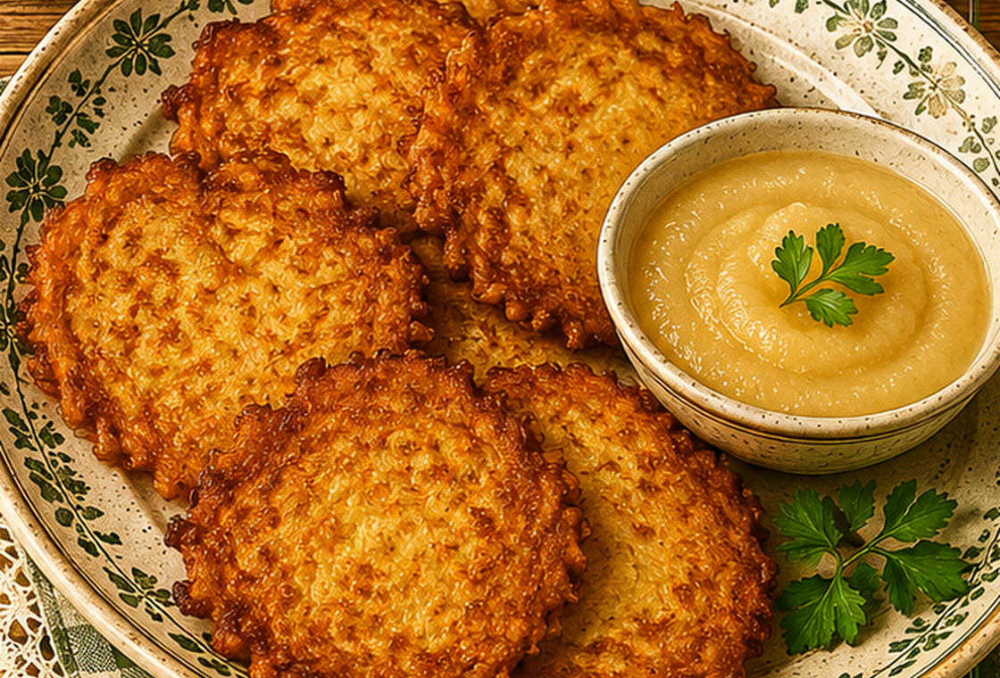

Kartoffelpuffer
Knusprig ausgebackene Puffer aus geriebenen Kartoffeln, Ei und wenig Mehl.

Originale Überlieferung
Kartoffeln werden geschält, gerieben und zum Abtropfen in ein Sieb gegeben. Salz und etwas Mehl kommen hinzu; für eine feinere Masse gibt man ein bis zwei Eier dazu. Die Puffer werden in heißem Fett auf beiden Seiten goldbraun gebacken.
Moderne Übertragung
Geriebene rohe Kartoffeln werden gut ausgedrückt, gewürzt und mit Ei sowie wenig Mehl gebunden. In heißem Fett werden kleine, flache Puffer gebraten.
Zutaten
- 1 kg rohe Kartoffeln
- 1–2 Eier
- 1–2 EL Mehl
- Salz
- Fett oder Öl zum Ausbacken
Zubereitung
- Kartoffeln schälen, fein reiben und in einem Sieb oder Tuch gut ausdrücken.
- Mit Ei, Mehl und Salz vermengen.
- Fett in einer Pfanne erhitzen.
- Jeweils kleine Portionen flach in die Pfanne setzen.
- Von beiden Seiten goldbraun und knusprig ausbacken.